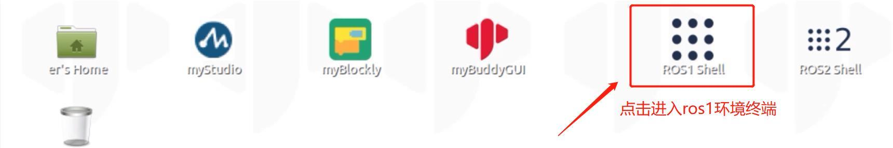
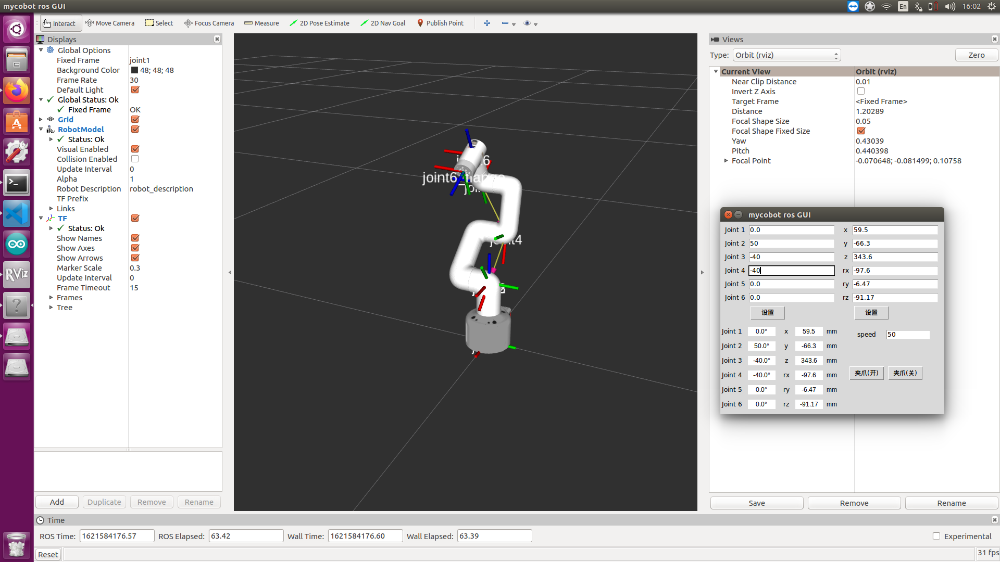
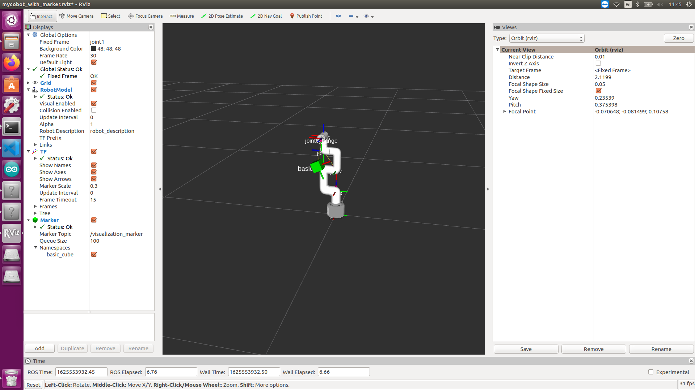
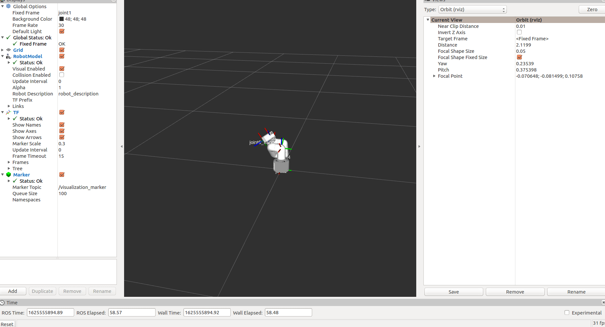
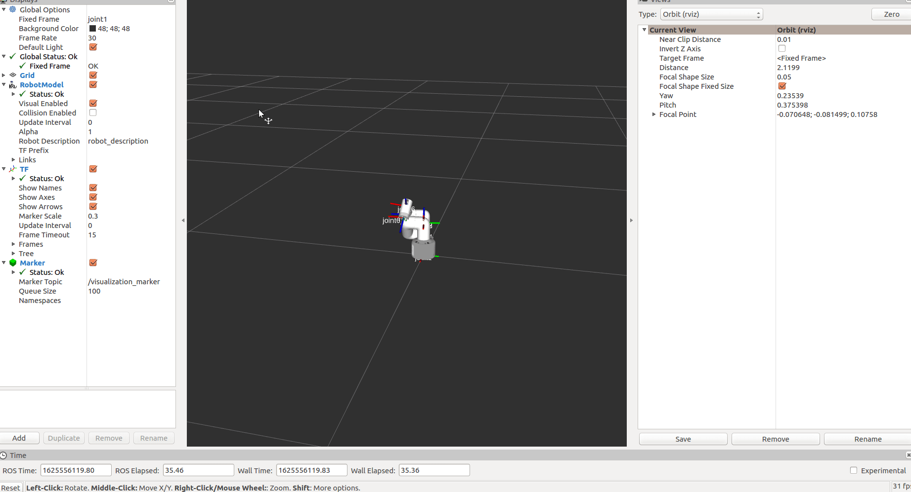
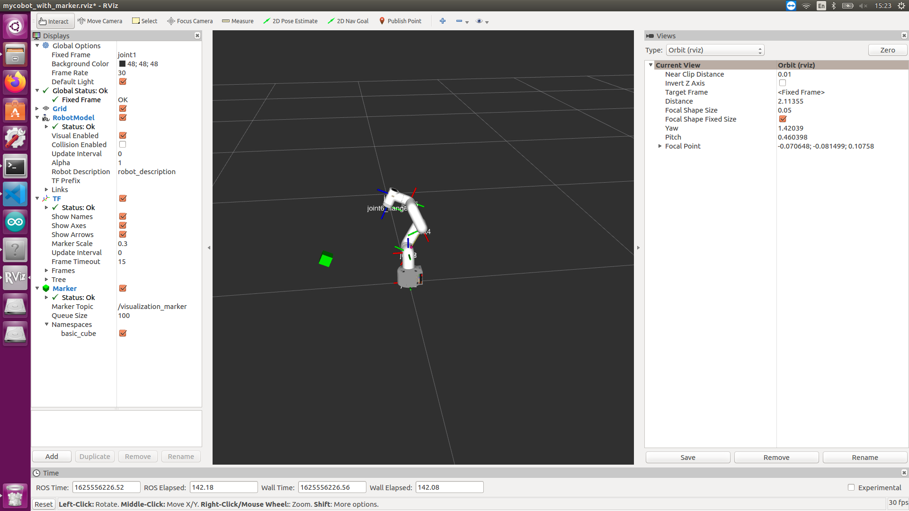
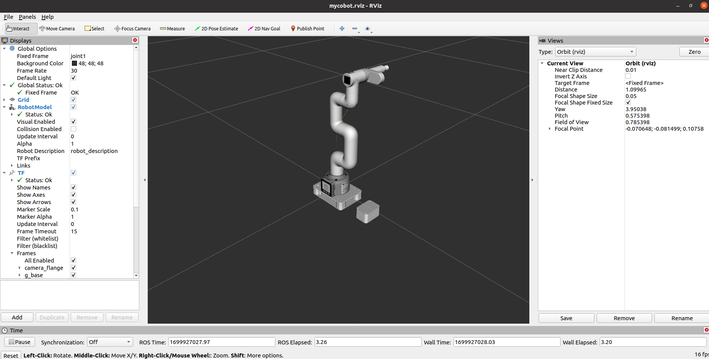

rviz的简单介绍及使用
rviz是ROS中一款三维可视化平台，一方面能够实现对外部信息的图形化显示，另外还可以通过 rviz 给对象发布控制信息，从而实现对机器人的监测与控制。
rviz的安装及界面简介
在安装ros时，如果执行的完全安装，rviz已经安装好了,您可以直接尝试运行；如果没有完全安装，可单独安装rviz:
# Ubuntu16.04
sudo apt-get install ros-kinetic-rviz
# Ubuntu18.04
sudo apt-get install ros-melodic-rviz
# Ubuntu20.04
sudo apt-get install ros-noetic-rviz
安装完成后，请先打开一个新的终端(快捷键Ctrl+Alt+T),输入如下指令：
roscore
然后再打开一个一个新的终端(快捷键Ctrl+Alt+T)输入命令打开rviz
rosrun rviz rviz
# 或
rviz
打开rviz,显示如下界面：

各个区域介绍
- 左侧为显示器列表，显示器是在3D世界中绘制某些内容的东西，并且可能在显示列表中具有一些可用的选项。
- 上方是工具栏，允许用户用各种功能按键选择多种功能的工具
- 中间部分为3D视图: 它是可以用三维方式查看各种数据的主屏幕。3D视图的背景颜色、固定框架、网格等可以在左侧显示的全局选项（Global Options）和网格（Grid）项目中进行详细设置。
- 下方为时间显示区域，包括系统时间和ROS时间等。
- 右侧为观测视角设置区域，可以设置不同的观测视角。
本部分我们只进行粗略的介绍，如果您想了解更多详细的内容，可以前往用户指南进行查看。
mycobot_ros安装与更新
- PI版本(Ubuntu 20.04)：
mycobot_ros 是 ElephantRobotics 推出的，适配旗下各类型桌面型机械臂的 ROS 包。
项目地址：https://github.com/elephantrobotics/mycobot_ros
官方默认的工作空间是catkin_ws。
点击桌面上的ROS1 Shell图标或者桌面下方栏的对应图标，打开ROS1环境终端：


然后输入以下指令：
cd ~/catkin_ws/src # 进入工作区的src文件夹中
# 克隆github上的代码
git clone https://github.com/elephantrobotics/mycobot_ros.git
cd .. # 返回工作区
catkin_make # 构建工作区中的代码
source devel/setup.bash # 添加环境变量
注意： 若/home/er/catkin_ws/src (等效于 ~/catkin_ws/src)目录中已经存在mycobot_ros文件夹，则需要先删除原有的 mycobot_ros，再执行以上命令。其中，目录路径中的er为虚拟机的用户名，若不一致请修改。
简单使用
通过launch文件启动
本例子建立在您已经完成环境搭建，并成功将本公司的代码从GitHub上复制下来的基础上。
打开一个控制台终端(快捷键Ctrl+Alt+T) 输入一下命令进行ROS的环境配置。
cd ~/catkin_ws/
source devel/setup.bash
再输入：
- mycobot 280-M5版本：
roslaunch mycobot_280 test.launch
- mycobot 280-Pi版本：
roslaunch mycobot_280pi test.launch
- mycobot 280-JetsonNano版本：
roslaunch mycobot_280jn test.launch
打开rviz，并得到如下结果：

如果您想了解更多rviz的相关资料信息，您可以前往官方文档进行查看
机械臂的控制
滑块控制
打开一个命令行，运行：
- mycobot 280-M5版本：
# mycobot 280-M5版本默认串口名为"/dev/ttyUSB0"，波特率为115200.部分机型的串口名为 "dev/ttyACM0",若默认串口名发生错误，可将串口名改为"/dev/ttyACM0".
roslaunch mycobot_280 slider_control.launch port:=/dev/ttyUSB0 baud:=115200
- mycobot 280-Pi版本：
# mycobot 280-Pi版本默认串口名为"/dev/ttyAMA0"，波特率为1000000.
roslaunch mycobot_280pi slider_control.launch port:=/dev/ttyAMA0 baud:=1000000
- mycobot 280-JetsonNano版本：
# mycobot 280-JetsonNano版本默认串口名为"/dev/ttyTHS1"，波特率为1000000.
roslaunch mycobot_280jn slider_control.launch port:=/dev/ttyTHS1 baud:=1000000
- mycobot 280-Arduino版本：
# mycobot 280-Arduino版本默认串口名为"/dev/ttyACM0"，波特率为115200.
roslaunch mycobot_280arduino slider_control.launch port:=/dev/ttyACM0 baud:=115200
它将打开 rviz 和一个滑块组件，你将看到如下画面：

接着你可以通过拖动滑块来控制 rviz 中的模型移动。如果你想让真实的 mycobot 跟着一起运动，需要再打开一个命令行，运行：
- mycobot 280-M5版本：
# mycobot 280-M5版本默认串口名为"/dev/ttyUSB0"，波特率为115200.部分机型的串口名为 "dev/ttyACM0",若默认串口名发生错误，可将串口名改为"/dev/ttyACM0".
rosrun mycobot_280 slider_control.py _port:=/dev/ttyUSB0 _baud:=115200
- mycobot 280-Pi版本：
# mycobot 280-Pi版本默认串口名为"/dev/ttyAMA0"，波特率为1000000.
rosrun mycobot_280pi slider_control.py _port:=/dev/ttyAMA0 _baud:=1000000
- mycobot 280-JetsonNano版本：
# mycobot 280-JetsonNano版本默认串口名为"/dev/ttyTHS1"，波特率为1000000.
rosrun mycobot_280jn slider_control.py _port:=/dev/ttyTHS1 _baud:=1000000
- mycobot 280-Arduino版本：
# mycobot 280-Arduino版本默认串口名为"/dev/ttyACM0"，波特率为115200.
rosrun mycobot_280arduino slider_control.py _port:=/dev/ttyACM0 _baud:=115200
请注意：由于在命令输入的同时机械臂会移动到模型目前的位置，在您使用命令之前请确保rviz中的模型没有出现穿模现象 不要在连接机械臂后做出快速拖动滑块的行为，防止机械臂损坏
模型跟随
除了上面的控制，我们也可以让模型跟随真实的机械臂运动。打开一个命令行运行：
mycobot 280-M5版本：
# mycobot 280-M5版本默认串口名为"/dev/ttyUSB0"，波特率为115200.部分机型的串口名为 "dev/ttyACM0",若默认串口名发生错误，可将串口名改为"/dev/ttyACM0". rosrun mycobot_280 follow_display.py _port:=/dev/ttyUSB0 _baud:=115200mycobot 280-pi版本：
# mycobot 280-Pi版本默认串口名为"/dev/ttyAMA0"，波特率为1000000.
rosrun mycobot_280pi follow_display.py _port:=/dev/ttyAMA0 _baud:=1000000
- mycobot 280-JetsonNano版本：
# mycobot 280-JetsonNano版本默认串口名为"/dev/ttyTHS1"，波特率为1000000.
rosrun mycobot_280jn follow_display.py _port:=/dev/ttyTHS1 _baud:=1000000
- mycobot 280-Arduino版本：
# mycobot 280-Arduino版本默认串口名为"/dev/ttyACM0"，波特率为115200.
rosrun mycobot_280arduino follow_display.py _port:=/dev/ttyACM0 _baud:=115200
然后打开另一个命令行，运行：
- mycobot 280-M5版本：
roslaunch mycobot_280 mycobot_follow.launch mycobot 280-Pi版本：
roslaunch mycobot_280pi mycobot_follow.launchmycobot 280-JetsonNano版本：
roslaunch mycobot_280jn mycobot_follow.launchmycobot 280-Arduino版本：
roslaunch mycobot_280arduino mycobot_follow.launch它将打开 rviz 展示模型跟随效果。
GUI 控制
在前面的基础上，本包还提供了简单的 Gui 控制界面。 该方式意在于真实机械臂相互联动，请连接 mycobot。
打开命令行：
- mycobot 280-M5版本：
# mycobot 280-M5版本默认串口名为"/dev/ttyUSB0"，波特率为115200.部分机型的串口名为 "dev/ttyACM0",若默认串口名发生错误，可将串口名改为"/dev/ttyACM0". roslaunch mycobot_280 simple_gui.launch port:=/dev/ttyUSB0 baud:=115200 - mycobot 280-Pi版本：
# mycobot 280-Pi版本默认串口名为"/dev/ttyAMA0"，波特率为1000000. roslaunch mycobot_280pi simple_gui.launch port:=/dev/ttyAMA0 baud:=1000000 - mycobot 280-JetsonNano版本：
# mycobot 280-JetsonNano版本默认串口名为"/dev/ttyTHS1"，波特率为1000000.
roslaunch mycobot_280jn simple_gui.launch port:=/dev/ttyTHS1 baud:=1000000
- mycobot 280-Arduino版本：
# mycobot 280-Arduino版本默认串口名为"/dev/ttyACM0"，波特率为115200.
roslaunch mycobot_280arduino simple_gui.launch port:=/dev/ttyACM0 baud:=115200

键盘控制
在 mycobot_280 的包中添加了键盘控制的功能，并在 rviz 中实时同步。本功能依赖 pythonApi，所以确保与真实机械臂连接。
打开一个命令行，运行：
- mycobot 280-M5版本：
# mycobot 280-M5版本默认串口名为"/dev/ttyUSB0"，波特率为115200.部分机型的串口名为 "dev/ttyACM0",若默认串口名发生错误，可将串口名改为"/dev/ttyACM0".
roslaunch mycobot_280 teleop_keyboard.launch port:=/dev/ttyUSB0 baud:=115200
- mycobot 280-Pi版本：
# mycobot 280-Pi版本默认串口名为"/dev/ttyAMA0"，波特率为1000000.
roslaunch mycobot_280pi teleop_keyboard.launch port:=/dev/ttyAMA0 baud:=1000000
- mycobot 280-JetsonNano版本：
# mycobot 280-JetsonNano版本默认串口名为"/dev/ttyTHS1"，波特率为1000000.
roslaunch mycobot_280jn teleop_keyboard.launch port:=/dev/ttyTHS1 baud:=1000000
- mycobot 280-Arduino版本：
# mycobot 280-Arduino版本默认串口名为"/dev/ttyACM0"，波特率为115200.
roslaunch mycobot_280arduino teleop_keyboard.launch port:=/dev/ttyACM0 baud:=115200
运行效果如下：

命令行中将会输出 mycobot 信息，如下：
SUMMARY
========
PARAMETERS
* /mycobot_services/baud: 115200
* /mycobot_services/port: /dev/ttyUSB0
* /robot_description: <?xml version="1....
* /rosdistro: kinetic
* /rosversion: 1.12.1.17
NODES
/
mycobot_services (mycobot_280/mycobot_services.py)
real_listener (mycobot_280/listen_real.py)
robot_state_publisher (robot_state_publisher/state_publisher)
rviz (rviz/rviz)
auto-starting new master
process[master]: started with pid [1333]
ROS_MASTER_URI=http://localhost:11311
setting /run_id to f977b3f4-b3a9-11eb-b0c8-d0c63728b379
process[rosout-1]: started with pid [1349]
started core service [/rosout]
process[robot_state_publisher-2]: started with pid [1357]
process[rviz-3]: started with pid [1367]
process[mycobot_services-4]: started with pid [1380]
process[real_listener-5]: started with pid [1395]
[INFO] [1620882819.196217]: start ...
[INFO] [1620882819.205050]: /dev/ttyUSB0,115200
MyCobot Status
--------------------------------
Joint Limit:
joint 1: -170 ~ +170
joint 2: -170 ~ +170
joint 3: -170 ~ +170
joint 4: -170 ~ +170
joint 5: -170 ~ +170
joint 6: -180 ~ +180
Connect Status: True
Servo Infomation: all connected
Servo Temperature: unknown
Atom Version: unknown
[INFO] [1620882819.435778]: ready
接着，打开另一个命令行，运行：
- mycobot 280-M5版本：
rosrun mycobot_280 teleop_keyboard.py
#或者
rosrun mycobot_280 teleop_keyboard.py _speed:=70
- mycobot 280-Pi版本：
rosrun mycobot_280 teleop_keyboard.py
#或者
rosrun mycobot_280pi teleop_keyboard.py _speed:=70
- mycobot 280-JetsonNano版本：
rosrun mycobot_280jn teleop_keyboard.py
#或者
rosrun mycobot_280jn teleop_keyboard.py _speed:=70
- mycobot 280-Arduino版本：
rosrun mycobot_280arduino teleop_keyboard.py
#或者
rosrun mycobot_280arduino teleop_keyboard.py _speed:=70
你会在命令行中看到如下输出：
Mycobot Teleop Keyboard Controller
---------------------------
Movimg options(control coordinations [x,y,z,rx,ry,rz]):
w(x+)
a(y-) s(x-) d(y+)
z(z-) x(z+)
u(rx+) i(ry+) o(rz+)
j(rx-) k(ry-) l(rz-)
Gripper control:
g - open
h - close
Other:
1 - Go to init pose
2 - Go to home pose
3 - Resave home pose
q - Quit
currently: speed: 50 change percent 5
在该终端中，您可以通过命令行中的按键控制机械臂的状态和对机械臂进行移动操作。
该脚本支持的参数：
_speed：机械臂移动速度。
_change_percent：移动距离百分比。
视觉
将相机安装在 mycobot 的末端。 本视觉部分使用 eye-in-hand 的方式。

识别并显示
命令行运行：
- mycobot 280-M5版本：
roslaunch mycobot_280 detect_marker.launch mycobot 280-Pi版本：
roslaunch mycobot_280pi detect_marker.launchmycobot 280-JetsonNano版本：
roslaunch mycobot_280jn detect_marker.launchmycobot 280-Arduino版本：
roslaunch mycobot_280arduino detect_marker.launch可选择参数：
- num：相机id， 默认为 0.
启动后效果图：

识别二维码，获取与相机的相对位置关系。根据 rviz 中mycobot的末端位置，进行坐标转换，最后显示在 rviz 中。
可以参考滑块控制,使用 slider_control.py 来控制机械臂
视觉追踪与抓取
本部分需要使用垂直吸泵。
命令行运行：
- mycobot 280-M5版本：
# mycobot 280-M5版本默认串口名为"/dev/ttyUSB0"，波特率为115200.部分机型的串口名为 "dev/ttyACM0",若默认串口名发生错误，可将串口名改为"/dev/ttyACM0". roslaunch mycobot_280 detect_marker_with_topic.launch port:=/dev/ttyUSB0 baud:=115200 mycobot 280-Pi版本：
# mycobot 280-Pi版本默认串口名为"/dev/ttyAMA0"，波特率为1000000. roslaunch mycobot_280pi detect_marker_with_topic.launch port:=/dev/ttyAMA0 baud:=1000000mycobot 280-JetsonNano版本：
# mycobot 280-JetsonNano版本默认串口名为"/dev/ttyTHS1"，波特率为1000000.
roslaunch mycobot_280jn detect_marker_with_topic.launch port:=/dev/ttyTHS1 baud:=1000000
- mycobot 280-Arduino版本：
# mycobot 280-Arduino版本默认串口名为"/dev/ttyACM0"，波特率为115200.
roslaunch mycobot_280arduino detect_marker_with_topic.launch port:=/dev/ttyACM0 baud:=115200
可选择参数：
- num： 相机id， 默认为 0.
- port： 串口字符串
- baud： 波特率
启动后效果图：
将实时显示 mycobot 的状态。

紧接着运行，追踪和抓取的脚本。打开新的命令行：
mycobot 280-M5版本：
rosrun mycobot_280 follow_and_pump.pymycobot 280-Pi版本：
rosrun mycobot_280pi follow_and_pump.pymycobot 280-JetsonNano版本：
rosrun mycobot_280jn follow_and_pump.pymycobot 280-Arduino版本：
rosrun mycobot_280arduino follow_and_pump.py启动后，mycobot 会去到它的初始位置

当识别到 marker 后，跟随一段时间，然后尝试去吸取并结束程序。

末端执行器
- 支持的末端执行器： myCobot自适应夹爪、myCobot垂直吸泵V2.0、摄像头法兰
- 适用设备： myCobot 280 M5、myCobot 280 PI
注意：myCobot自适应夹爪仅支持 myCobot 280 M5 设备
myCobot自适应夹爪
1 加载模型
打开一个命令行，运行：
- myCobot 280-M5版本：
roslaunch mycobot_280 test_gripper.launch
它将打开rviz，你将看到如下画面：

2 滑块控制
打开一个命令行，运行：
- myCobot 280-M5版本：
# myCobot 280-M5版本默认串口名为"/dev/ttyUSB0"，波特率为115200.部分机型的串口名为 "dev/ttyACM0",若默认串口名发生错误，可将串口名改为"/dev/ttyACM0".
roslaunch mycobot_280 slider_control_gripper.launch port:=/dev/ttyUSB0 baud:=115200
它将打开rviz和一个滑块组件，你将看到如下画面：

接着你可以通过拖动滑块来控制 rviz 中的模型移动。 如果你想让真实的 myCobot 跟着一起运动，需要再打开一个命令行，运行：
- myCobot 280-M5版本：
# myCobot 280-M5版本默认串口名为"/dev/ttyUSB0"，波特率为115200.部分机型的串口名为 "dev/ttyACM0",若默认串口名发生错误，可将串口名改为"/dev/ttyACM0".
rosrun mycobot_280 slider_control_gripper.py _port:=/dev/ttyUSB0 _baud:=115200
请注意：由于在命令输入的同时机械臂会移动到模型目前的位置，在您使用命令之前请确保rviz中的模型没有出现穿模现象。 不要在连接机械臂后做出快速拖动滑块的行为，防止机械臂损坏。
3 模型跟随
除了上面的控制，我们也可以让模型跟随真实的机械臂运动。打开一个命令行运行：
- mycobot 280-M5版本：
# mycobot 280-M5版本默认串口名为"/dev/ttyUSB0"，波特率为115200.部分机型的串口名为 "dev/ttyACM0",若默认串口名发生错误，可将串口名改为"/dev/ttyACM0".
rosrun mycobot_280 follow_display_gripper.py _port:=/dev/ttyUSB0 _baud:=115200
然后打开另一个命令行，运行：
- mycobot 280-M5版本：
roslaunch mycobot_280 mycobot_follow_gripper.launch
它将打开 rviz 展示模型跟随效果。
4 GUI控制
在前面的基础上，本包还提供了简单的 Gui 控制界面。 该方式意在于真实机械臂相互联动，请连接 myCobot。
打开命令行：
- mycobot 280-M5版本：
# mycobot 280-M5版本默认串口名为"/dev/ttyUSB0"，波特率为115200.部分机型的串口名为 "dev/ttyACM0",若默认串口名发生错误，可将串口名改为"/dev/ttyACM0".
roslaunch mycobot_280 simple_gui_gripper.launch port:=/dev/ttyUSB0 baud:=115200
它将打开rviz和一个GUI界面，你将看到如下画面：

5 键盘控制
在 mycobot_280 的包中添加了键盘控制的功能，并在 rviz 中实时同步。本功能依赖 pythonApi，所以确保与真实机械臂连接。
打开一个命令行，运行：
- mycobot 280-M5版本：
# mycobot 280-M5版本默认串口名为"/dev/ttyUSB0"，波特率为115200.部分机型的串口名为 "dev/ttyACM0",若默认串口名发生错误，可将串口名改为"/dev/ttyACM0".
roslaunch mycobot_280 teleop_keyboard_gripper.launch port:=/dev/ttyUSB0 baud:=115200
运行效果如下：
命令行中将会输出 mycobot 信息，如下：
SUMMARY
========
PARAMETERS
* /mycobot_services/baud: 115200
* /mycobot_services/port: /dev/ttyUSB0
* /robot_description: <?xml version="1....
* /rosdistro: kinetic
* /rosversion: 1.12.1.17
NODES
/
mycobot_services (mycobot_280/mycobot_services.py)
real_listener (mycobot_280/listen_real.py)
robot_state_publisher (robot_state_publisher/state_publisher)
rviz (rviz/rviz)
auto-starting new master
process[master]: started with pid [1333]
ROS_MASTER_URI=http://localhost:11311
setting /run_id to f977b3f4-b3a9-11eb-b0c8-d0c63728b379
process[rosout-1]: started with pid [1349]
started core service [/rosout]
process[robot_state_publisher-2]: started with pid [1357]
process[rviz-3]: started with pid [1367]
process[mycobot_services-4]: started with pid [1380]
process[real_listener-5]: started with pid [1395]
[INFO] [1620882819.196217]: start ...
[INFO] [1620882819.205050]: /dev/ttyUSB0,115200
MyCobot Status
--------------------------------
Joint Limit:
joint 1: -170 ~ +170
joint 2: -135 ~ +140
joint 3: -150 ~ +150
joint 4: -145 ~ +135
joint 5: -170 ~ +170
joint 6: -180 ~ +180
Connect Status: True
Servo Infomation: all connected
Servo Temperature: unknown
Atom Version: unknown
[INFO] [1620882819.435778]: ready
接着，打开另一个命令行，运行：
- mycobot 280-M5版本：
rosrun mycobot_280 teleop_keyboard.py
你会在命令行中看到如下输出：
Mycobot Teleop Keyboard Controller
---------------------------
Movimg options(control coordinations [x,y,z,rx,ry,rz]):
w(x+)
a(y-) s(x-) d(y+)
z(z-) x(z+)
u(rx+) i(ry+) o(rz+)
j(rx-) k(ry-) l(rz-)
Gripper control:
g - open
h - close
Pump control:
b - open
m - close
Other:
1 - Go to init pose
2 - Go to home pose
3 - Resave home pose
q - Quit
currently: speed: 50 change percent 5
在该终端中，您可以通过命令行中的按键控制机械臂的状态和对机械臂进行移动操作。
该脚本支持的参数：
- _speed：机械臂移动速度。
- _change_percent：移动距离百分比。
myCobot垂直吸泵V2.0
1 加载模型
打开一个命令行，运行：
- myCobot 280-M5版本：
roslaunch mycobot_280 test_pump.launch
- myCobot 280-PI版本：
roslaunch mycobot_280pi test_pump.launch
它将打开rviz，你将看到如下画面：

2 滑块控制
注意：该功能仅支持对机械臂的控制
打开一个命令行，运行：
- myCobot 280-M5版本：
# myCobot 280-M5版本默认串口名为"/dev/ttyUSB0"，波特率为115200.部分机型的串口名为 "dev/ttyACM0",若默认串口名发生错误，可将串口名改为"/dev/ttyACM0".
roslaunch mycobot_280 slider_control_pump.launch port:=/dev/ttyUSB0 baud:=115200
- myCobot 280-PI版本：
# myCobot 280-Pi版本默认串口名为"/dev/ttyAMA0"，波特率为1000000.
roslaunch mycobot_280pi slider_control_pump.launch port:=/dev/ttyAMA0 baud:=1000000
它将打开rviz和一个滑块组件，你将看到如下画面：

接着你可以通过拖动滑块来控制 rviz 中的模型移动。 如果你想让真实的 myCobot 跟着一起运动，需要再打开一个命令行，运行：
- myCobot 280-M5版本：
# myCobot 280-M5版本默认串口名为"/dev/ttyUSB0"，波特率为115200.部分机型的串口名为 "dev/ttyACM0",若默认串口名发生错误，可将串口名改为"/dev/ttyACM0".
rosrun mycobot_280 slider_control.py _port:=/dev/ttyUSB0 _baud:=115200
- myCobot 280-PI版本：
# myCobot 280-Pi版本默认串口名为"/dev/ttyAMA0"，波特率为1000000.
rosrun mycobot_280pi slider_control.py _port:=/dev/ttyAMA0 _baud:=1000000
请注意：由于在命令输入的同时机械臂会移动到模型目前的位置，在您使用命令之前请确保rviz中的模型没有出现穿模现象。 不要在连接机械臂后做出快速拖动滑块的行为，防止机械臂损坏。
3 GUI控制
在前面的基础上，本包还提供了简单的 Gui 控制界面。 该方式意在于真实机械臂相互联动，请连接 myCobot。
打开命令行：
- mycobot 280-M5版本：
# mycobot 280-M5版本默认串口名为"/dev/ttyUSB0"，波特率为115200.部分机型的串口名为 "dev/ttyACM0",若默认串口名发生错误，可将串口名改为"/dev/ttyACM0".
roslaunch mycobot_280 simple_gui_pump.launch port:=/dev/ttyUSB0 baud:=115200
它将打开rviz和一个GUI界面，你将看到如下画面：

4 键盘控制
在 mycobot_280 的包中添加了键盘控制的功能，并在 rviz 中实时同步。本功能依赖 python API，所以确保与真实机械臂连接。
打开一个命令行，运行：
- mycobot 280-M5版本：
# mycobot 280-M5版本默认串口名为"/dev/ttyUSB0"，波特率为115200.部分机型的串口名为 "dev/ttyACM0",若默认串口名发生错误，可将串口名改为"/dev/ttyACM0".
roslaunch mycobot_280 teleop_keyboard_pump.launch port:=/dev/ttyUSB0 baud:=115200
运行效果如下：
接着，打开另一个命令行，运行：
- mycobot 280-M5版本：
rosrun mycobot_280 teleop_keyboard.py
你会在命令行中看到如下输出：
Mycobot Teleop Keyboard Controller
---------------------------
Movimg options(control coordinations [x,y,z,rx,ry,rz]):
w(x+)
a(y-) s(x-) d(y+)
z(z-) x(z+)
u(rx+) i(ry+) o(rz+)
j(rx-) k(ry-) l(rz-)
Gripper control:
g - open
h - close
Pump control:
b - open
m - close
Other:
1 - Go to init pose
2 - Go to home pose
3 - Resave home pose
q - Quit
currently: speed: 50 change percent 5
在该终端中，您可以通过命令行中的按键控制机械臂的状态和对机械臂进行移动操作。
该脚本支持的参数：
- _speed：机械臂移动速度。
- _change_percent：移动距离百分比。
摄像头法兰
1 加载模型
打开一个命令行，运行：
- myCobot 280-M5版本：
roslaunch mycobot_280 test_camera_flange.launch
- myCobot 280-PI版本：
roslaunch mycobot_280pi test_camera_flange.launch
它将打开rviz，你将看到如下画面：

2 滑块控制
注意：该功能仅支持对机械臂的控制
打开一个命令行，运行：
- myCobot 280-M5版本：
# myCobot 280-M5版本默认串口名为"/dev/ttyUSB0"，波特率为115200.部分机型的串口名为 "dev/ttyACM0",若默认串口名发生错误，可将串口名改为"/dev/ttyACM0".
roslaunch mycobot_280 slider_control_camera_flange.launch port:=/dev/ttyUSB0 baud:=115200
- myCobot 280-PI版本：
# myCobot 280-Pi版本默认串口名为"/dev/ttyAMA0"，波特率为1000000.
roslaunch mycobot_280pi slider_control_camera_flange.launch port:=/dev/ttyAMA0 baud:=1000000
它将打开rviz和一个滑块组件，你将看到如下画面：

接着你可以通过拖动滑块来控制 rviz 中的模型移动。 如果你想让真实的 myCobot 跟着一起运动，需要再打开一个命令行，运行：
- myCobot 280-M5版本：
# myCobot 280-M5版本默认串口名为"/dev/ttyUSB0"，波特率为115200.部分机型的串口名为 "dev/ttyACM0",若默认串口名发生错误，可将串口名改为"/dev/ttyACM0".
rosrun mycobot_280 slider_control.py _port:=/dev/ttyUSB0 _baud:=115200
- myCobot 280-PI版本：
# myCobot 280-Pi版本默认串口名为"/dev/ttyAMA0"，波特率为1000000.
rosrun mycobot_280pi slider_control.py _port:=/dev/ttyAMA0 _baud:=1000000
请注意：由于在命令输入的同时机械臂会移动到模型目前的位置，在您使用命令之前请确保rviz中的模型没有出现穿模现象。 不要在连接机械臂后做出快速拖动滑块的行为，防止机械臂损坏。
摄像头法兰 && 吸泵
1 加载模型
打开一个命令行，运行：
- myCobot 280-M5版本：
roslaunch mycobot_280 test_camera_flange_pump.launch
- myCobot 280-PI版本：
roslaunch mycobot_280pi test_camera_flange_pump.launch
它将打开rviz，你将看到如下画面：
